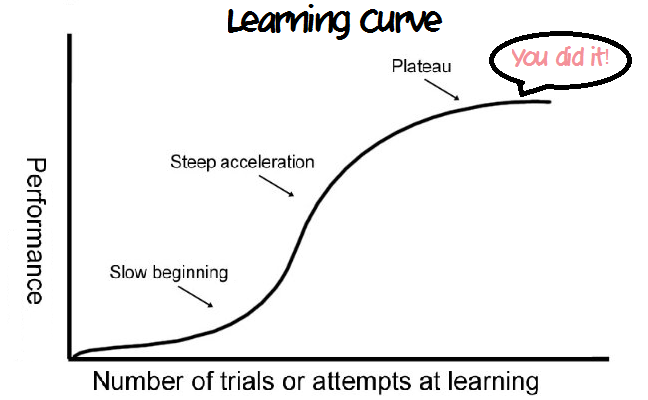

In the early days, most software engineers often fantasize about becoming masters of their favorite technology. It can programming languages like javascript, java, or Swift or it can be technologies like Android, iOS, or Qt. It appears like an obvious pathway to becoming someone like a super software engineer. Well! that’s not how it works. If you are in that zone too, this article is for you.
Don’t be obsessed
Mastering the technology takes some time, an amateur will take months to learn something which an experienced developer can learn in weeks. Of course, with time, you can be an expert in developing software using a particular language or technology.
In a learning curve, the starting phase is generally more resistant and hence can offer the most learning. But once you cross the threshold, it becomes a breeze to work on that technology. Yes! you see those tech guys who are working on a project for the last 5–6 years and they appear like a pro.

But after this comes the dark phase when your vision as a software engineer starts to narrow down to just that niche technology or the language you are working with.
Developments in software technologies are a rapid and never-ending process. Once you start feeling like the master of that craft, it starts to get worse. You will start to ignore the developments around you and live in your comfort bubble where you can do everything.
Once you get out of it, probably due to a job change or you got some freelance project or probably a new opportunity. You will feel that this obsession has degraded your skill as a software engineer over time and you might end up getting nowhere.
Be like Jack
Now you already know what not to do. Let’s discuss what you need to do. ‘ Jack of all trades, master of none ' sounds like a bad term but it’s not in this case.
Yes! you got it right. As a software engineer is expected to be a problem solver at the very core level. A software engineer should be able to use any kind of tool that he/she has in order to design the solution.
Let this sink in. If you really want to master software engineering, you need to have a holistic overview of the technology. You cannot use a screwdriver for fixing everything. Different tools have different purposes to solve. As a good software engineer, you should be able to develop scripts for cron jobs as well as develop binaries in C/C++ for performance.
Don’t confine yourself to technology or a language. Start focusing on techniques like design patterns such as Factory, flyweight or decorator patterns and concepts such as caching, transaction isolation in databases or sharding etc. Read about software architecture and system design. Get your fundamentals right and read about the latest tech in the market.
Being Jack gives you freedom and confidence as an experienced software engineer to work on a variety of projects. You can be open to numerous opportunities and hence can increase your chances to get more work as a freelancer or more salary as a full-time engineer.
Conclusion
Being an excellent software engineer is not to know about everything but to know how to figure out everything. Try to master the craft of problem-solving rather than defining macros or creating coroutines in your favourite language.
“ Javascript developer may be an expert in writing javascript code but a good software engineer is an expert in writing any kind of software system “
Don’t forget to follow me on Medium for more such content and give a clap if you like it.